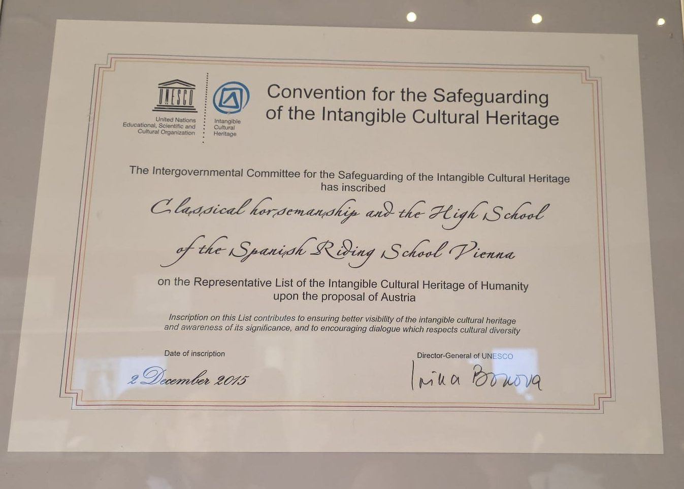
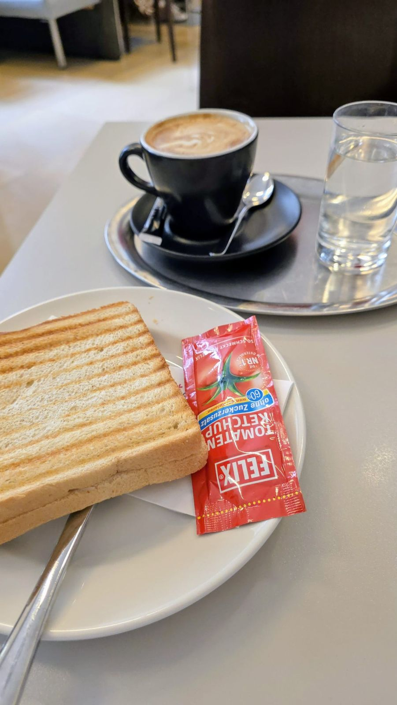

Journey 04 · Wien Note 3 of 8 Field Note
Vienna: A Kind of Pentimento

I didn’t learn the history of the Lipizzaner stallions at the riding school. Oh, I came in knowing the basics, I read the brochure and website. Their ancestors can be traced to 800 AD. The foundational bloodlines of these beautiful horses go all the way back to eight original stallions from the 18th and 19th century. I even knew that the training methods for these horses is based on the methods of Xenophon of Athens, an ancient Greek philosopher.

What I did not know was what happened to the horses during World War II. I learned about it later, over coffee, when I lingered after the show in the cafe.
It came up in casual conversation, as a few tourists still buzzing from the excitement of seeing the Lipizzaner stallions in person, shared our thoughts about the practice we had watched and Vienna in general. Although many stories were new to me, the one that caught my imagination was the story about the Lipizzaner’s and World War II.
And the more I listened, the more the story captivated me. At one point I remember thinking, why is this not a movie?
It had all the elements. Horses bred over centuries for a world that no longer existed, suddenly caught in the wreckage of one that was ending. A Nazi officer with a vision for a master race of horses to match his vision of a master race of men. An entire starving army advancing from the east, indifferent to what was irreplaceable. A cavalry commander whose life’s expertise had already been made obsolete once and who was now being asked to do the impossible with it. And at the center of it all, a secret mission behind enemy lines to move the horses, to preserve them, even when their value could not be easily justified.
But what stayed with me wasn’t just the story itself. It was the parts of the story that were underneath the exciting narrative.
The commander who led the effort to save the horses had built his life around a specific kind of expertise as a cavalry officer. By late in World War II, his horsemanship was tied to a version of the world that had already begun to shift, and he had adjusted along with it. When everything changed again, those skills did not become useless; instead, they became the basis for something else. He used what he knew, combined it with what the moment required, and found a way to act.
How often do we assume that once something is no longer directly applicable, it has no value? As if knowledge and experience have a fixed purpose, rather than a living thing that can be adapted, reshaped, and carried forward into contexts we could not have anticipated. We tend to narrate innovation as rupture: a clean break from what came before. But that is rarely how it actually works. What we know becomes substrate. It doesn’t disappear; it goes underneath, bearing weight, shaping what grows above it even when it is no longer visible.
But substrate only holds what is built on top of it. And what was built on top of these horses, once they arrived in America, was very nearly nothing at all.
When the horses were finally safe, some were taken to the United States, where they were to be rescued from one danger only to encounter another kind of loss. In Europe, their lineage was ancient and meticulously recorded, showcasing centuries of careful breeding and cultural significance. Men had given their lives to care for and eventually save these horses, so deep was their belief in what they represented. But in America, that context didn’t travel with them. The European certification that marked them as extraordinary was dismissed by American breeders and horsemen. The breeds, both the Lipizzaner and the Polish Arabians rescued alongside them, were largely unknown in the US at the time. The American Quarter horse and Thoroughbred were far more common, and prized for their versatility and calm, easy temperaments. The Arabians and Lipizzaner’s, by contrast, were seen as too spirited and reactive. Horses that had been worth a secret mission behind enemy lines were now seen as poor investments. Some were euthanized, others sold at auction. Many were simply just lost.
It is the same story that plays out any time something of deep value moves between contexts where its meaning is not shared. The thing itself doesn’t change. What changes is whether the people holding it have the cultural knowledge to recognize what they are holding.
There is something particularly striking about this version of that story. These were horses that one regime had identified as the living pinnacle of centuries of civilization – worth a eugenics program, worth a breeding farm, worth obsessing over. A few years later, in a different country, they were seen as poor investments. Unremarkable. Not worth keeping. The horses hadn’t changed. Only the eyes looking at them had.
What’s surprising about this story though is not that the gap existed. Gaps like that open up constantly, wherever meaning travels without its context. It is that the gap was closed. And that gap wasn’t closed through explanation or a government program. There wasn’t instruction or certification or anyone sitting down to outline why these horses mattered. The European credentials had already been tried and dismissed.
It was The Black Stallion. A novel. A story written for children.
It was art that reached people before argument could. It created a feeling first, and understanding followed the feeling. Once Americans had an emotional connection to spirited horses as something noble and worthy of care, the cultural ground shifted, and the breeds that had seemed worthless began to find their place. The Arabians and Lipizzaner’s both earned recognition in American consciousness not through documentation, but through a story.
I keep thinking about that now. How often do we try to close a gap in understanding by explaining more clearly, providing more evidence, making a more airtight case, when what is actually needed is a way for someone to feel it first? We cannot always change the way things are… but we can change the way things will be. And sometimes that work doesn’t begin with an argument.
It begins with a story.
I came to Vienna to see the white horses. I didn’t plan for any of the rest – not the coffee, the conversation, or the story I couldn’t stop thinking about long after I left Vienna. But the unplanned experience gave me something the itinerary never could have.
There is a term in art history for when the old work shows through a painting: pentimento. The painter’s earlier choices, buried under layers of new decisions, becoming visible again with time. I study it as a framework for leadership. But sitting in that café in Vienna, I wasn’t thinking about leadership theory. I was just listening to a story about horses.
And somehow, that was exactly where it needed to find me.
Mentioned in
Originally published at fieldnotesfromabroad.com/2026/04/12/vienna-a-kind-of-pentimento/